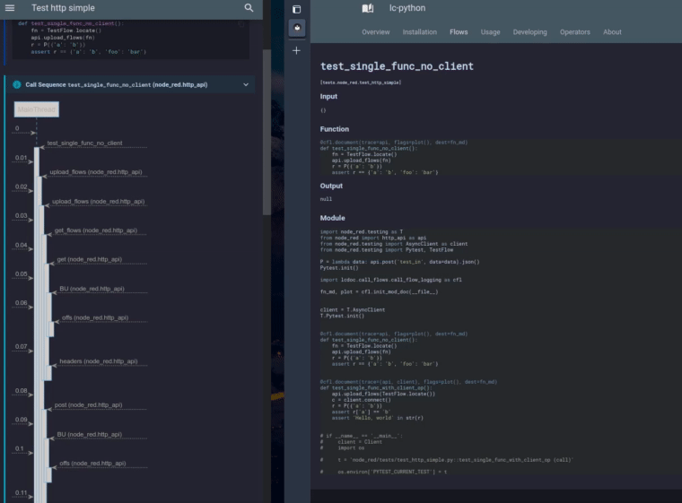

Callflow Logging¤
Function calling sequence as a plantuml sequence diagram.
Experimental Feature
Callflow logging is not a wrapper for a 3rd party library but docutools "native". It was
transferred from another project and the code base contains some legacy.
The feature is useable but in a beta state.
Mechanics¤
-
Callflow logging works via the
sys.set_tracehook, being invoked at function entry and exit, a feature which also the coverage package uses in order to record code coverage. -
This implementation here allows to specify which functions, classes, modules should be traced, so that the call flow charts only contain interesting stuff.
-
We record input and exit data plus invokation and exit times.
-
Then we draw plantuml files, incl. links to statically deliverable json files, with more information.
-
Once we have the plantuml files, we create svgs using the kroki plugin.
-
The svg is embedded into the html, in order to get javascript click handlers working.
-
A javascript part takes care for proper formatting within mkdocs and fetching the details on mouse over and click events.
See the example.
Syntax¤
-
Add
cflas header parameter, in order to get the LP block written into standalone importable module, created in your build directory. -
In the
show('callflow', call=..., trace=[<list of traced object>])function call supply the entry function to be wrapped and a number of objects to be traced. These may be modules, classes and functions. -
You may supply kroki header parameters like
serverandpumlfor style, since we call this module to render the created plantuml into an svg.
Important
- Every change of the lp code body will result in new flow charts being created, together with all in and out parameters. That might pile up, so please clear your build dir from time to time and git-ignore it.
- The docs dir gets a symlink over to the build dir:
docs/autodocs.
Example¤
We trace the standard lib's json module while calling dumps:
LP Source:
```python lp:python cfl addsrc
import json
def say_hello(n):
print(n)
return json.dumps({'name': n})
def test_flow():
say_hello('joe')
show('call_flow', call=test_flow, trace=json)
```
Result:
joe
joe
Move the mouse over the arrows and click to see the full data recorded.
Call Flow Details
You should get details infos like these

Ctrl+R (reload) to get back to your original documentation page.
Open Seperate Details Window
The details window is updated when you move the mose over the call flow:
